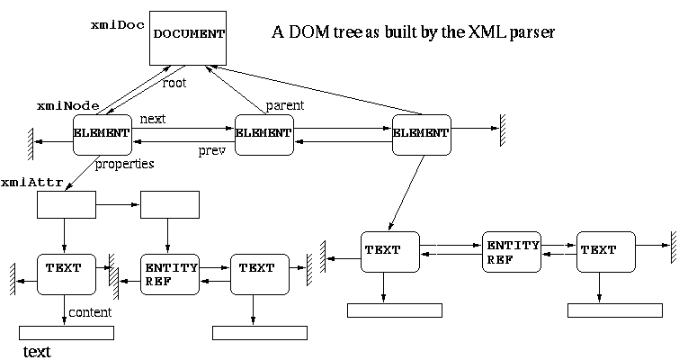

This document describes the XML library provideed in the Gnome framework. XML is a standard to build tag based structured documents/data.
The internal document repesentation is as close as possible to the DOM interfaces.
Libxml also has a SAX interface, James Henstridge made a nice documentation expaining how to use it. The interface is as compatible as possible with Expat one.
The code is commented in a way which allow extensive documentation to be automatically extracted.
There is also a mailing-list xml@rufus.w3.org for libxml, with an on-line archive. To subscribe to this majordomo based list, send a mail to majordomo@rufus.w3.org with "subscribe xml" in the content of the message.
This library is released both under the W3C Copyright and the GNU LGP, basically everybody should be happy, if not, drop me a mail.
People are invited to use the gdome Gnome module to get a full DOM interface, thanks to Raph Levien, check his DOMination paper. He uses it for his implementation of SVG called gill.
XML is a standard for markup based structured documents, here is an example:
<?xml version="1.0"?> <EXAMPLE prop1="gnome is great" prop2="& linux too"> <head> <title>Welcome to Gnome</title> </head> <chapter> <title>The Linux adventure</title> <p>bla bla bla ...</p> <image href="linus.gif"/> <p>...</p> </chapter> </EXAMPLE>
The first line specify that it's an XML document and gives useful
informations about it's encoding. Then the document is a text format whose
structure is specified by tags between brackets. Each tag opened have
to be closed XML is pedantic about this, not that for example the
image tag has no content (just an attribute) and is closed by ending up the
tag with />.
The parser returns a tree built during the document analysis. The value returned is an xmlDocPtr (i.e. a pointer to an xmlDoc structure). This structure contains informations like the file name, the document type, and a root pointer which is the root of the document (or more exactly the first child under the root which is the document). The tree is made of xmlNodes, chained in double linked lists of siblings and with childs<->parent relationship. An xmlNode can also carry properties (a chain of xmlAttr structures). An attribute may have a value which is a list of TEXT or ENTITY_REF nodes.
Here is an example (erroneous w.r.t. the XML spec since there should be only one ELEMENT under the root):

In the source package there is a small program (not installed by default) called tester which parses XML files given as argument and prints them back as parsed, this is useful to detect errors both in XML code and in the XML parser itself. It has an option --debug which prints the actual in-memory structure of the document, here is the result with the example given before:
DOCUMENT
version=1.0
standalone=true
ELEMENT EXAMPLE
ATTRIBUTE prop1
TEXT
content=gnome is great
ATTRIBUTE prop2
ENTITY_REF
TEXT
content= too
ELEMENT head
ELEMENT title
TEXT
content=Welcome to Gnome
ELEMENT chapter
ELEMENT title
TEXT
content=The Linux adventure
ELEMENT p
TEXT
content=bla bla bla ...
ELEMENT image
ATTRIBUTE href
TEXT
content=linus.gif
ELEMENT p
TEXT
content=...
This should be useful to learn the internal representation model.
This section is directly intended to help programmers getting bootstrapped using the XML library from the C language. It doesn't intent to be extensive, I hope the automatically generated docs will provide the completeness required, but as a separated set of documents. The interfaces of the XML library are by principle low level, there is nearly zero abstration. Those interested in a higher level API should look at DOM (unfortunately not completed).
Usually, the first thing to do is to read an XML input, the parser accepts to parse both memory mapped documents or direct files. The functions are defined in "parser.h":
xmlDocPtr xmlParseMemory(char *buffer, int size);parse a zero terminated string containing the document
xmlDocPtr xmlParseFile(const char *filename);parse an XML document contained in a file (possibly compressed)
This returns a pointer to the document structure (or NULL in case of failure).
A couple of comments can be made, first this mean that the parser is memory-hungry, first to load the document in memory, second to build the tree. Reading a document without building the tree will be possible in the future by pluggin the code to the SAX interface (see SAX.c).
The other way to get an XML tree in memory is by building it. Basically there is a set of functions dedicated to building new elements, those are also described in "tree.h", here is for example the piece of code producing the example used before:
xmlDocPtr doc;
xmlNodePtr tree, subtree;
doc = xmlNewDoc("1.0");
doc->root = xmlNewDocNode(doc, NULL, "EXAMPLE", NULL);
xmlSetProp(doc->root, "prop1", "gnome is great");
xmlSetProp(doc->root, "prop2", "&linux; too");
tree = xmlNewChild(doc->root, NULL, "head", NULL);
subtree = xmlNewChild(tree, NULL, "title", "Welcome to Gnome");
tree = xmlNewChild(doc->root, NULL, "chapter", NULL);
subtree = xmlNewChild(tree, NULL, "title", "The Linux adventure");
subtree = xmlNewChild(tree, NULL, "p", "bla bla bla ...");
subtree = xmlNewChild(tree, NULL, "image", NULL);
xmlSetProp(subtree, "href", "linus.gif");
Not really rocket science ...
Basically by including "tree.h" your code has access to the internal structure of all the element of the tree. The names should be somewhat simple like parent, childs, next, prev, properties, etc... For example still with the previous example:
doc->root->childs->childspoints to the title element,
doc->root->childs->next->child->child
points to the text node containing the chapter titlle "The Linux adventure" and
doc->root->properties->next->val
points to the entity reference containing the value of "&linux" at the beginning of the second attribute of the root element "EXAMPLE".
functions are provided to read and write the document content:
xmlAttrPtr xmlSetProp(xmlNodePtr node, const CHAR *name, const
CHAR *value);This set (or change) an attribute carried by an ELEMENT node the value can be NULL
const CHAR *xmlGetProp(xmlNodePtr node, const CHAR
*name);This function returns a pointer to the property content, note that no extra copy is made
Two functions must be used to read an write the text associated to elements:
xmlNodePtr xmlStringGetNodeList(xmlDocPtr doc, const CHAR
*value);This function takes an "external" string and convert it to one text node or possibly to a list of entity and text nodes. All non-predefined entity references like &Gnome; will be stored internally as an entity node, hence the result of the function may not be a single node.
CHAR *xmlNodeListGetString(xmlDocPtr doc, xmlNodePtr list, int
inLine);this is the dual function, which generate a new string containing the content of the text and entity nodes. Note the extra argument inLine, if set to 1 instead of returning the &Gnome; XML encoding in the string it will substitute it with it's value say "GNU Network Object Model Environment". Set it if you want to use the string for non XML usage like User Interface.
Basically 3 options are possible:
void xmlDocDumpMemory(xmlDocPtr cur, CHAR**mem, int
*size);returns a buffer where the document has been saved
extern void xmlDocDump(FILE *f, xmlDocPtr doc);dumps a buffer to an open file descriptor
int xmlSaveFile(const char *filename, xmlDocPtr cur);save the document ot a file. In that case the compression interface is triggered if turned on
The library handle transparently compression when doing file based accesses, the level of compression on saves can be tuned either globally or individually for one file:
int xmlGetDocCompressMode (xmlDocPtr doc);Get the document compression ratio (0-9)
void xmlSetDocCompressMode (xmlDocPtr doc, int mode);Set the document compression ratio
int xmlGetCompressMode(void);Get the default compression ratio
void xmlSetCompressMode(int mode);set the default compression ratio
DOM stands for the Document Object Model this is an API for accessing XML or HTML structured documents. Native support for DOM in Gnome is on the way (module gnome-dom), and it will be based on gnome-xml. This will be a far cleaner interface to manipulate XML files within Gnome since it won't expose the internal structure. DOM defiles a set of IDL (or Java) interfaces allowing to traverse and manipulate a document. The DOM library will allow accessing and modifying "live" documents presents on other programs like this:
This should help greatly doing things like modifying a gnumeric spreadsheet embedded in a GWP document for example.
Here is a real size example, where the actual content of the application data is not kept in the DOM tree but uses internal structures. It is based on a proposal to keep a database of jobs related to Gnome, with an XML based storage structure. Here is an XML encoded jobs base:
<?xml version="1.0"?>
<gjob:Helping xmlns:gjob="http://www.gnome.org/some-location">
<gjob:Jobs>
<gjob:Job>
<gjob:Project ID="3"/>
<gjob:Application>GBackup</gjob:Application>
<gjob:Category>Development</gjob:Category>
<gjob:Update>
<gjob:Status>Open</gjob:Status>
<gjob:Modified>Mon, 07 Jun 1999 20:27:45 -0400 MET DST</gjob:Modified>
<gjob:Salary>USD 0.00</gjob:Salary>
</gjob:Update>
<gjob:Developers>
<gjob:Developer>
</gjob:Developer>
</gjob:Developers>
<gjob:Contact>
<gjob:Person>Nathan Clemons</gjob:Person>
<gjob:Email>nathan@windsofstorm.net</gjob:Email>
<gjob:Company>
</gjob:Company>
<gjob:Organisation>
</gjob:Organisation>
<gjob:Webpage>
</gjob:Webpage>
<gjob:Snailmail>
</gjob:Snailmail>
<gjob:Phone>
</gjob:Phone>
</gjob:Contact>
<gjob:Requirements>
The program should be released as free software, under the GPL.
</gjob:Requirements>
<gjob:Skills>
</gjob:Skills>
<gjob:Details>
A GNOME based system that will allow a superuser to configure
compressed and uncompressed files and/or file systems to be backed
up with a supported media in the system. This should be able to
perform via find commands generating a list of files that are passed
to tar, dd, cpio, cp, gzip, etc., to be directed to the tape machine
or via operations performed on the filesystem itself. Email
notification and GUI status display very important.
</gjob:Details>
</gjob:Job>
</gjob:Jobs>
</gjob:Helping>
While loading the XML file into an internal DOM tree is a matter of calling only a couple of functions, browsing the tree to gather the informations and generate the internals structures is harder, and more error prone.
The suggested principle is to be tolerant with respect to the input structure. For example the ordering of the attributes is not significant, Cthe XML specification is clear about it. It's also usually a good idea to not be dependant of the orders of the childs of a given node, unless it really makes things harder. Here is some code to parse the informations for a person:
/*
* A person record
*/
typedef struct person {
char *name;
char *email;
char *company;
char *organisation;
char *smail;
char *webPage;
char *phone;
} person, *personPtr;
/*
* And the code needed to parse it
*/
personPtr parsePerson(xmlDocPtr doc, xmlNsPtr ns, xmlNodePtr cur) {
personPtr ret = NULL;
DEBUG("parsePerson\n");
/*
* allocate the struct
*/
ret = (personPtr) malloc(sizeof(person));
if (ret == NULL) {
fprintf(stderr,"out of memory\n");
return(NULL);
}
memset(ret, 0, sizeof(person));
/* We don't care what the top level element name is */
cur = cur->childs;
while (cur != NULL) {
if ((!strcmp(cur->name, "Person")) && (cur->ns == ns))
ret->name = xmlNodeListGetString(doc, cur->childs, 1);
if ((!strcmp(cur->name, "Email")) && (cur->ns == ns))
ret->email = xmlNodeListGetString(doc, cur->childs, 1);
cur = cur->next;
}
return(ret);
}
Here is a couple of things to notice:
Here is another piece of code used to parse another level of the structure:
/*
* a Description for a Job
*/
typedef struct job {
char *projectID;
char *application;
char *category;
personPtr contact;
int nbDevelopers;
personPtr developers[100]; /* using dynamic alloc is left as an exercise */
} job, *jobPtr;
/*
* And the code needed to parse it
*/
jobPtr parseJob(xmlDocPtr doc, xmlNsPtr ns, xmlNodePtr cur) {
jobPtr ret = NULL;
DEBUG("parseJob\n");
/*
* allocate the struct
*/
ret = (jobPtr) malloc(sizeof(job));
if (ret == NULL) {
fprintf(stderr,"out of memory\n");
return(NULL);
}
memset(ret, 0, sizeof(job));
/* We don't care what the top level element name is */
cur = cur->childs;
while (cur != NULL) {
if ((!strcmp(cur->name, "Project")) && (cur->ns == ns)) {
ret->projectID = xmlGetProp(cur, "ID");
if (ret->projectID == NULL) {
fprintf(stderr, "Project has no ID\n");
}
}
if ((!strcmp(cur->name, "Application")) && (cur->ns == ns))
ret->application = xmlNodeListGetString(doc, cur->childs, 1);
if ((!strcmp(cur->name, "Category")) && (cur->ns == ns))
ret->category = xmlNodeListGetString(doc, cur->childs, 1);
if ((!strcmp(cur->name, "Contact")) && (cur->ns == ns))
ret->contact = parsePerson(doc, ns, cur);
cur = cur->next;
}
return(ret);
}
One can notice that once used to it, writing this kind of code is quite simple, but boring. Ultimately, it could be possble to write stubbers taking either C data structure definitions, a set of XML examples or an XML DTD and produce the code needed to import and export the content between C data and XML storage. This is left as an exercise to the reader :-)
Feel free to use the code for the full C parsing example as a template,